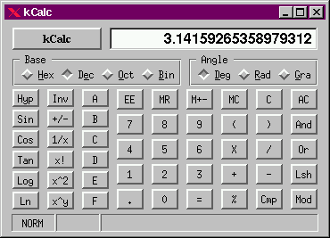

This is release 2.1 of kcalc. Although I think that this version is
already quite useful, some important functionality is yet to be
implemented -- most notably EE mode.
Apart from some of the KeyAccels, usage is completely straightforward.
Read the Makefile and comment out -DUSE_LONG_DOUBLE if you don't have long double math on your machine. Linux does have long double math, whereas solaris doesn't seem to have it. If you have long double math functions, use -DUSE_LONG_DOUBLE .This will give you better precision. I tested this calculator on Linux as well as Sun Solaris.
make
make install
The Key-Accels were chosen in such a fashion as to allow you to conveniently operate the calculator without moving you hands from their standard keyboard position.
ALT + X exit the calculator ALT + q exit the calculator ALT + x exit the calculator ALT + d set trig-mode to deg ALT + r set trig-mode to rad ALT + g set trig-mode to grad ALT + e set radix to decimal ALT + o set radix to octal ALT + b set radix to binary s Sin o Cos t Tan i Inv inverse, e.g. if you want arcsin(x) type i s \ +/- [ ^2 ^ x^y = = r 1/x r for reciproc Enter = Return = Backspace CA Del CA Esc C h Hyp (Hyperbolic) as e.g in Hyp Sin , the sinh(x)
regards, Bernd
wuebben@math.cornell.edu
wuebben@kde.org